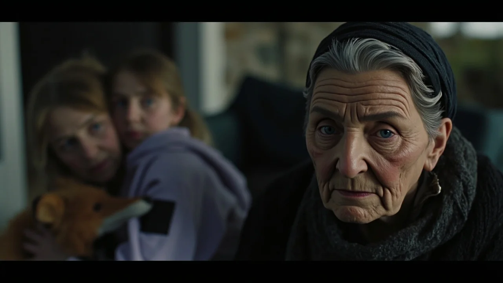
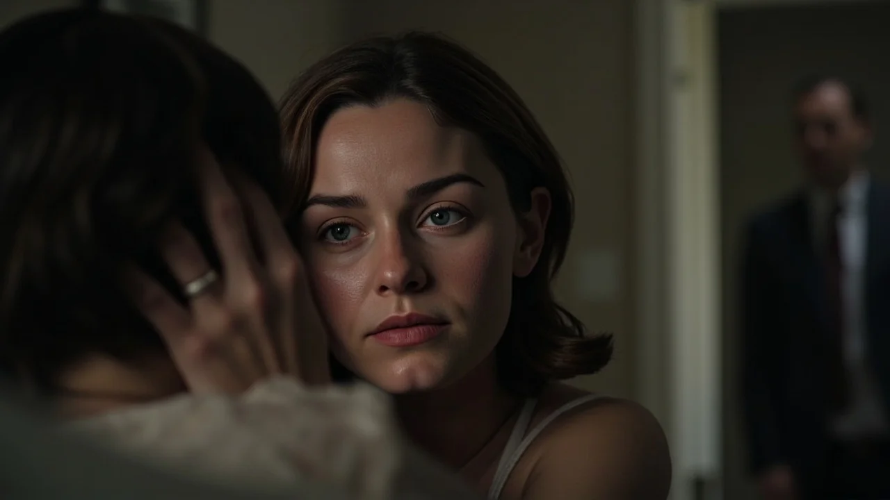
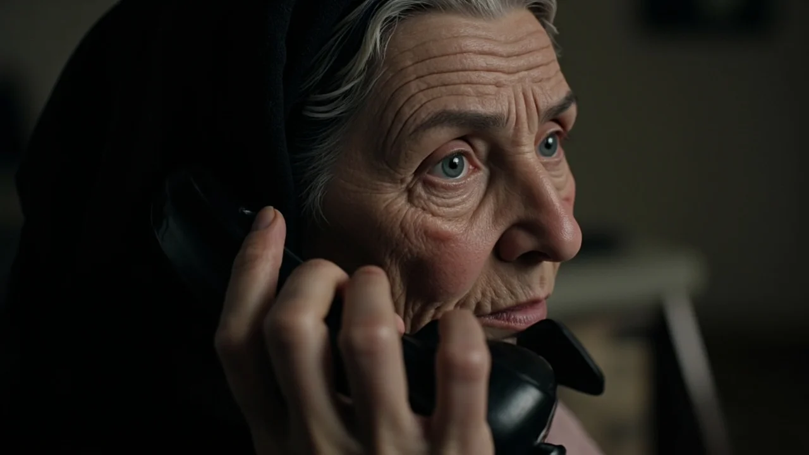
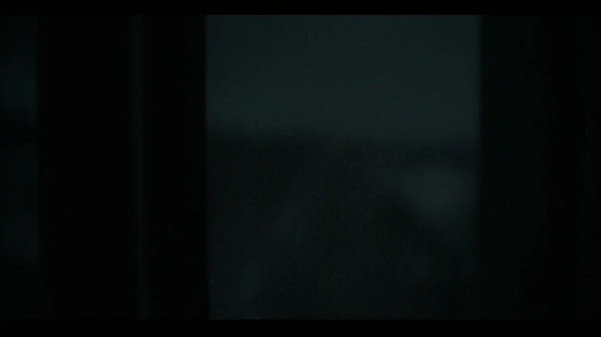
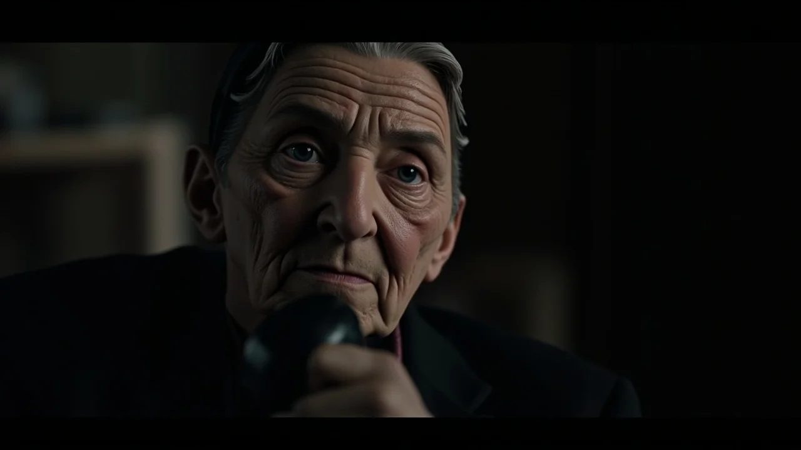

El caserón de piedra de la Solana olía a leña vieja, yeso húmedo y viento de montaña. Anselma, la propietaria, sostenía el manojo de llaves de forja en su mano arrugada sin entregarlo aún. Vestía una chaqueta de lana negra con los puños deshilachados y miraba a la pequeña Clara con una fijeza hosca. La niña se resguardaba tras la gabardina de su madre, abrazando un zorro de peluche gastado por los lavados.
—El contrato es por seis meses —dijo la anciana con voz seca—. El agua viene del manantial alto y la caldera calienta bien si purgan los radiadores. Pero hay una condición. Una sola. A partir de las doce de la noche, jamás abran las contraventanas del dormitorio principal ni miren hacia el huerto. Da igual el ruido que sientan o si alguien los llama por su nombre desde los nogales. Echan el cerrojo y se quedan en la cama hasta que aclare el día.
Miguel sonrió de medio lado, frotándose las manos entumecidas. Pensó en las supersticiones habituales de los pueblos de montaña, ideadas para disuadir a los merodeadores o justificar los aullidos de los corzos.
—Descuide —respondió, tomando las llaves metálicas—. Sabemos respetar las manías de las casas viejas. Bastante trabajo tendremos con teletrabajar mientras tiran los tabiques de nuestro piso.
La mujer no devolvió la sonrisa. Se ajustó el pañuelo negro sobre la cabeza canosa y bajó los peldaños de granito sin despedirse. Su silueta tardó dos minutos en perderse por el camino de grava.
Los primeros tres días transcurrieron en calma. Miguel instaló su ordenador en la mesa de comedor entre planos y tazas de café. Laura limpió el polvo de los muebles de castaño y acomodó el cuarto de Clara en la estancia contigua al dormitorio principal.
La primera grieta surgió en la madrugada del cuarto día, pasadas las dos de la noche. Una llovizna fina repiqueteaba contra el canalón de cinc. Miguel despertó con la garganta reseca y sintió una corriente helada bajo la puerta.
Desde el exterior, bajo la ventana del dormitorio, una voz infantil y delgada atravesó el cristal:
—¡Papá! ¡Mamá, abridme, por favor! Tengo mucho frío y se me ha caído el muñeco en el barro...
Miguel saltó de la cama con el corazón en un puño. Era la voz exacta de Clara: el leve ceceo en las eses y el tono quejumbroso de cuando despertaba con fiebre. Dio dos zancadas hacia el ventanal, alargando la mano hacia el pestillo de bronce.
—¡Miguel, no! —susurró Laura desde la cama, reteniéndolo con fuerza por el brazo—. ¡Espera!

Laura salió descalza al pasillo frío y empujó la puerta de la habitación contigua. Miguel la siguió conteniendo el aliento. En la penumbra del cuarto infantil, Clara dormía plácidamente de costado, arropada bajo su edredón de estrellas azules junto a su muñeco de felpa.
Desde abajo, en el huerto empapado, el llanto continuó:
—¡Papá, date prisa! ¡Que me mojo los pies y me da miedo la oscuridad!
Las palabras se repetían con las mismas pausas y la misma inflexión quebrada, como una grabación que vuelve a empezar. Miguel se quedó inmóvil junto al marco de la puerta, sintiendo un sudor gélido en la nuca. Laura abrazó a la niña dormida, cubriéndole los oídos con las manos. Ninguno volvió a dormir esa noche.
Durante las noches siguientes, la cosa del exterior comenzó a aprender.
El martes, la voz abandonó el tono infantil. Hacia la una y media de la madrugada, lo que sonó bajo los nogales fue la voz de Laura, repitiendo palabra por palabra la charla que la pareja había tenido esa tarde en la cocina sobre el banco: «Miguel, no podemos pagar la fianza si no aprueban el crédito, piénsalo con cabeza». La frase sonaba con un eco hueco, desprovista de respiración, pero con el timbre idéntico de su esposa.
El miércoles, la voz se transformó en la de Miguel, llamando a Laura con insistencia melosa: «Cariño, asómate un momento, ven a ver el brocal del pozo». A las tres de la madrugada, ambas voces hablaron al mismo tiempo, solapándose en un diálogo desacompasado que helaba la sangre.
Convencido de que algún desalmado pretendía asustarlos con altavoces ocultos, Miguel condujo hasta la ferretería comarcal y compró dos cámaras de vigilancia nocturna por infrarrojos. Esa misma tarde atornilló una al tronco del nogal, apuntando a la fachada y a la ventana del dormitorio, y fijó la otra en la verja.
Esa noche reinó un silencio sepulcral.
Al amanecer, Miguel bajó al huerto para retirar las tarjetas de memoria antes de que su familia despertara. Conectó la tarjeta al portátil en la cocina y abrió el archivo grabado a las dos y cuarenta.
La pantalla mostró el patio en tonos verdosos. En el segundo diez, una silueta humana apareció inmóvil en el césped mojado, justo bajo la ventana. Pero lo espantoso era su cabeza.

En el primer fotograma, el rostro que miraba hacia arriba tenía las facciones de Laura. Tres segundos después, mientras la figura permanecía rígida, la piel pareció licuarse bajo la lluvia: la mandíbula se ensanchó y brotó una barba corta y oscura, dibujando la cara exacta de Miguel. Y antes de que el archivo parpadeara con interferencias, los rasgos encogieron hasta componer la cara pecosa de Clara.
En el último instante, la figura giró el cuello hacia la lente del árbol y abrió una sonrisa horizontal desmesurada, cuyos labios se tensaban más allá de lo humano. La grabación se cortó en negro.
Miguel apartó la vista con náuseas y el pulso desbocado.
—Nos vamos ahora mismo —dijo Laura al ver la palidez de su marido. Le bastó notar el temblor de sus manos.
—Recoge lo de Clara —asintió Miguel con voz ronca—. Solo lo imprescindible. El resto se queda aquí.
Antes de salir, Miguel descolgó el teléfono fijo de la entrada y marcó el número de Anselma. Necesitaba encararla y exigir respuestas.
—Diga —respondió la anciana al cuarto tono.
—Soy Miguel Rivas. Deje las evasivas, Anselma. ¿Qué hay en esta finca? Puse cámaras en los árboles. Anoche vimos esa... abominación imitándonos en el jardín. Nos marchamos ahora mismo.
Al otro lado de la línea hubo un silencio pesado antes de que Anselma hablara con fúnebre resignación:
—Les advertí que jamás miraran por esa ventana. Les dije que cerraran la madera.
—¡No miramos por la ventana! —gritó Miguel—. ¡Puse una cámara en el nogal!

—Un cristal es un ojo, muchacho —susurró la anciana—. Da igual si es una lente o una pupila. La norma no era para protegerlos del espanto de verla. Era para proteger la casa. Esa cosa no sabe qué forma tiene el mundo; es ciega hasta que alguien la mira de frente. Cuando la miras, aprende quién eres. Aprende tu estatura, tus facciones, tu manera de andar... y aprende cómo franquear la puerta.
—¿De qué habla?
—De que ya no necesita llamarlos desde el huerto —sentenció la mujer—. Ahora que los ha visto a los tres, ya sabe cómo entrar.
La línea emitió un chasquido seco y quedó muerta.
El pánico se apoderó de la casa. Afuera, la niebla se pegaba a los cristales como un sudario blanco. Clara permanecía sentada en el suelo del salón, abrazando sus cuadernos con la mirada clavada en las sombras de la chimenea.
Cargaron los primeros bultos en el coche bajo un silencio opresivo. El motor arrancó al primer intento con un rumor reconfortante.
—Lleva a Clara al coche y abróchale el cinturón —le indicó Miguel a Laura—. Subo a por el chaquetón de la niña y la cartera con los documentos y nos largamos.
Laura asintió, tomó a la niña de la mano y caminó hacia el vehículo. Miguel cruzó de nuevo el umbral de la vivienda. Las estancias vacías resonaban con una acústica extraña, como si las paredes de piedra hubieran encogido hacia adentro. Subió las escaleras, recogió la cazadora de Clara y bajó al vestíbulo.
Al salir hacia el camino, se detuvo en seco.
El asiento trasero del coche estaba vacío. Laura permanecía de pie junto a la puerta abierta del conductor, inmóvil, mirando hacia la fachada con los brazos caídos y el rostro desencajado.
—¿Dónde está Clara? —preguntó Miguel, corriendo hacia ella.

Laura levantó un brazo trémulo y señaló el piso superior.
En la ventana del dormitorio principal, las contraventanas estaban abiertas de par en par. Tras el cristal sucio, recortada contra la penumbra de la alcoba, una niña de ocho años permanecía de pie. Llevaba la sudadera lila, las pecas sobre la nariz y la coleta lacia de Clara. Miraba fijamente hacia abajo con fijeza marmórea, sonriendo con la misma mueca atroz de la grabación.
—¡Clara! —bramó Miguel, tirando la cazadora al barro.
Echó a correr hacia la casa, subió las escaleras a zancadas y abrió de un golpe la puerta del dormitorio.
La habitación estaba vacía. La cama continuaba deshecha y el ventanal estaba cerrado por dentro, con los pestillos oxidados bien encajados en sus huecos. Tras el cristal solo había niebla y el goteo del alero.
Miguel se llevó las manos a la cabeza, jadeando.
Entonces, desde el exterior de la casa, un susurro diminuto y quebrado le llegó a través de la madera del suelo:
—Papá... por favor, no abras. Esa cosa cree que soy tú.
A Miguel se le heló la sangre. Se quedó de piedra en mitad del pasillo.
A su espalda, dentro del dormitorio vacío que acababa de registrar, algo golpeó el cristal de la ventana desde el interior. Tres golpes lentos y secos: *toc, toc, toc*. Y una voz idéntica a la suya, con su propia cadencia ronca, susurró desde las sombras del techo:
—Papá... por favor, no abras. Esa cosa cree que soy tú.
Un alarido resonó en la planta baja. Laura había entrado en la casa empuñando la barra de hierro del gato del coche. Corrió hacia el hueco bajo la escalera principal, donde una pequeña alacena permanecía semicerrada con un candado viejo. Laura arrancó la trampilla con desesperación.

Allí dentro, acurrucada entre sacos y mantas de embalar, estaba la auténtica Clara, tiritando de terror, con la cara empapada en lágrimas reales y las uñas clavadas en las rodillas.
—¡La tengo, Miguel! ¡Corre, sal de ahí! —gritó Laura.
Miguel bajó los escalones de tres en tres. Vio a su hija de carne y hueso sollozando en brazos de Laura. No miró hacia atrás, ni hacia arriba, donde las vigas crujían bajo el peso de algo que reptaba. Empujó a ambas hacia la salida, cerró de un portazo la puerta de roble y las metió en el coche.
Aceleró a fondo, haciendo patinar los neumáticos sobre el barro. Por el retrovisor, mientras el caserón se desdibujaba entre la niebla, vio tres siluetas asomadas a las tres ventanas de la planta alta: una mujer de pelo cobrizo, un hombre con barba de tres días y una niña menuda. Las tres sonreían con la misma boca deforme, moviendo las manos al unísono para despedirse.
Tres semanas más tarde, la lluvia de noviembre castigaba los tejados de pizarra de Navas del Brezo, a veinte kilómetros del valle.
Anselma estaba sentada a la mesa de camilla de su cocina, apurando un tazón de manzanilla tibia. Sobre el hule descansaba la gaceta local con el anuncio del alquiler rural de la casa de piedra.
El teléfono negro de la pared comenzó a sonar con su timbre metálico.
La anciana se levantó despacio, apoyándose en su bastón, y descolgó el auricular.
—¿Sí?
—Buenas tardes, llamo por la casa de la Solana —dijo la voz animada de un joven—. Mi pareja y yo buscamos un sitio tranquilo para pasar el invierno. ¿Sigue libre?
Anselma contempló la lluvia que resbalaba por el cristal de su ventana.
—Sí, está libre —respondió con voz apagada—. Pero hay una norma que deben respetar si quieren entrar. Una sola. A partir de las doce de la noche...
La anciana se detuvo en seco.
A través del visillo de encaje, al otro lado de la carretera desierta, una figura permanecía de pie bajo la farola de vapor de sodio. El agua empapaba su jersey azul marino y sus vaqueros oscuros. Tenía la cara de Miguel, su barba corta y sus ojos cansados.
La figura la miraba fijamente desde el asfalto mojado y estiró con lentitud los labios en una sonrisa horizontal que le partía las mejillas.
Anselma no terminó la frase. Dejó caer el auricular sobre la horquilla del teléfono, apagó la estufa y se sentó en la penumbra a esperar. Aquello ya no necesitaba que nadie mirara por la ventana para encontrar el camino.